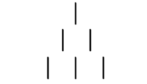
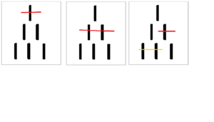
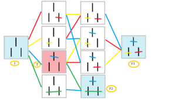

Scatole che imparano a giocare a NIM

Spoiler: nelle sequenze finali del film Wargames, un computer impara per prove ripetute a giocare a tris: presto scopre che non ci può essere nessun vincitore, come chiunque abbia fatto anche solo la terza media ben sa, e non perché gli sia stato insegnato, ma per esperienza diretta su (o sotto) i banchi di scuola. La macchina si applica poi al gioco della guerra termonucleare, scoprendo che a lanciare missili intercontinentali non vince nessuno. Evviva, la pax americana regna sul mondo:
Chissà che questo film non sia stato ispirato a MENACE, il primo algoritmo di intelligienza artificiale eseguito da un computer composto di scatole di fiammiferi e perline:
In questo laboratorio ci proponiamo di illustrare alcuni dei principi dell’apprendimento della macchina usando un gioco ancora più semplice del tris.
Obiettivo
Il laboratorio introduce alcuni concetti fondamentali del Machine Learning, lavorando con un esempio molto semplice: il gioco del NIM.
Nel NIM, come per il tris, si hanno un numero finito di “partite possibili” e l’idea è di codificare ciascuna configurazione con una scatola contenente dei pezzi del domino colorati, ciascun colore corrisponde ad una mossa, di modo da poter simulare mosse (e quindi partite) pescando un pezzo da ciascuna scatola (come un algoritmo di machine learning sceglie inizialmente a caso le mosse da fare). Alla fine della partita simulata, ovvero quando non ci sono più mosse a disposizione, occorre valutare se l’algoritmo (le scatole) hanno fatto un buon lavoro oppure no, e conseguentemente modificare il numero ed il colore dei pezzi dentro ciascuna scatola, di modo che alla successiva partita simulata il computer abbia più probabilità di vincere (reinforcement learning).

Come si gioca a NIM
Per giocare servono due persone (o due algoritmi), un foglio e una penna. Si inizia preparando il campo, tracciando una piramide crescente di stecchette, come in figura (1). Le mosse consistono nel barrare quante stecchette si vuole con un tratto dritto di penna, sempre sulla stessa riga e senza staccare la penna, si procede una mossa a testa, chi fa l’ultima mossa vince. Suggerimento: fermarsi alla seconda riga e provare a giocare, quando faremo giocare l’algoritmo rimarremo sempre in questo caso semplice, non appena si aumentano le righe il numero di configurazioni possibili, e quindi di scatole, aumenta in fretta e non è più possibile farne un laboratorio a scopo didattico; oltretutto non c’è speranza di capire le cose se prima non si capiscono i casi semplici. Tre esempi di mosse in figura (2).

Materiale
Le configurazioni possibili per il NIM a due livelli sono 10, pertanto: 10 scatole. Ogni scatola va etichettata con una configurazione possibile del gioco. Partendo dalla configurazione di inizio gioco, la “I” in figura (3), ci sono quattro mosse possibili, pertanto: pezzi del domino colorati di 4 colori diversi, a volontà. Per spiegare bene le cose è imprescindibile una lavagna, pertanto: una lavagna. In figura (3) tutte le possibili configurazioni del NIM a due livelli, collegate dalle mosse, nell’albero delle configurazioni.

Procedimento
Occorre inizialmente riempire ciascuna scatola con numeri uguali di pezzi colorati, facendo attenzione a inserire solo i colori corrispondenti a mosse possibili: nella configurazione di partenza vanno inseriti tutti i colori, nella configurazione che corrisponde ad una mossa effettuata, supponiamo la mossa codificata dal colore rosso, vanno inseriti tutti i colori meno il rosso, e così via. Si nota ora che esistono due configurazioni “finali”, ovvero con tutte le caselle barrate e nessuna mossa disponibile, e da queste è possibile capire immediatamente quale “giocatore” (dei due che le scatole impersonificano) ha vinto: semplicemente contando il numero di mosse fatte per arrivare a quella configurazione finale (nella figura (3) in F1 ha vinto il giocatore 1, in F2 il giocatore 2). L’obiettivo del laboratorio è trovare un algoritmo, nel nostro caso una sequenza ben definita di comandi che modifichino il numero ed il colore dei pezzi del domino dentro ciascuna scatola, per far vincere sempre il primo giocatore. Le richieste che facciamo all’algoritmo perché somigli a un vero algoritmo di machine learning, e perché sia possibile, in linea di principio, generalizzarlo al gioco del NIM a più di due livelli, sono:
- L’algoritmo deve essere semplice: vogliamo poter partire dalla sola informazione della configurazione finale e sapere già come comportarci.
- L’algoritmo deve essere progressivo, vogliamo aggiungere (o non aggiungere) pezzi alle scatole senza aprirle e vedere cosa c’è dentro, agendo dopo ogni partita in modo meccanico.
- L’algoritmo deve esplorare con calma lo spazio delle configurazioni possibili: anche in questo caso semplicissimo, come poi sarà approfondito dopo, esistono dei tranelli, e tentare di far convergere il processo troppo in fretta può trarci (e trarre le scatole) in inganno.
- L’algoritmo deve essere tale che, simulando tante partite, renda sempre più probabile la vittoria del primo giocatore (cioè, come ormai avrete capito, selezioni dentro la scatola di partenza le due mosse vincenti, nella figura (3) quella azzurra e quella arancio)
L’algoritmo
Un algoritmo (dei tanti possibili) vincente e che rispetta le richieste è il seguente: siano I, F1 e F2 come in figura (3)
- Una simulazione di partita è appena finita, osservare la configurazione finale: se F2 andare al punto 2, se F1 andare al punto 3.
- Il giocatore 1 ha perso, questo vuol dire che IL GIOCATORE 1 HA GIOCATO MALE E IL GIOCATORE 2 HA GIOCATO BENE, occorre eliminare la mossa del giocatore 1 e rinforzare quella del giocatore 2: buttare via il pezzo pescato dalla scatola I, rimettere il pezzo pescato dal giocatore 2 nella scatola dove lo si ha pescato insieme con un altro pezzo dello stesso colore, poi andare al punto 4.
- Il giocatore 1 ha vinto, questo vuol dire che O IL GIOCATORE 1 HA HIOCATO BENE, O IL GIOCATORE 2 HA GIOCATO MALE (si veda l’approfondimento al fondo), siccome non possiamo dire solamente guardando la configurazione finale che cosa sia successo, ci comportiamo in modo analogo al caso precedente, reinserire il pezzo pescato nella scatola I, buttare via il secondo pezzo pescato, reinserire il pezzo terzo pezzo pescato nella sua scatola. Poi andare al punto 4.
- Ricominciare la partita.
Approfondimenti e osservazioni
La configurazione “tranello” è quella T, infatti (siccome gioca a caso) il giocatore 2 può sia fare la mossa vincente (verde) sia fare quella perdente (rossa o gialla) anzi, è addirittura più probabile che faccia una mossa perdente (ce ne sono due), almeno all’inizio, essendoci parti uguali dei tre colori nella scatola. Nel caso facesse la mossa “verde” nessun problema, nell’altro caso, se decidessimo di “premiare” il giocatore 1 perché ha vinto, per esempio aggiungendo moltissimi pezzi dello stesso colore nella scatola I (non curandoci che abbia vinto grazie ad uno sbaglio dell’avversario) non faremmo convergere il processo! Morale della favola: perché il giocatore 1 impari a giocare, occorre che il suo avversario sia un buon giocatore, dobbiamo “allenare” anche il giocatore 2, e per farlo occorre muoversi “con calma”. Inoltre, aumentando la complessità del gioco, aumentano anche i tranelli e, soprattutto, non si ha modo di prevederli analiticamente come abbiamo fatto noi, la cautela è quindi importante almeno quanto la “fretta” di far convergere l’algoritmo. Modi alternativi di allenare le scatole, e spunti di riflessione, si possono trovare pensando di allenarle contro un avversario già “capace” (training controllato), o provando a chiedersi se l’algoritmo si può generalizzare a più livelli. Il gioco del NIM ha anche una matematica piuttosto ricca, una domanda interessante è, ad esempio, il numero di scatole necessario per implementare un algoritmo di machine learning di questo tipo per un NIM con N livelli (indizio: c’entra Fibonacci).